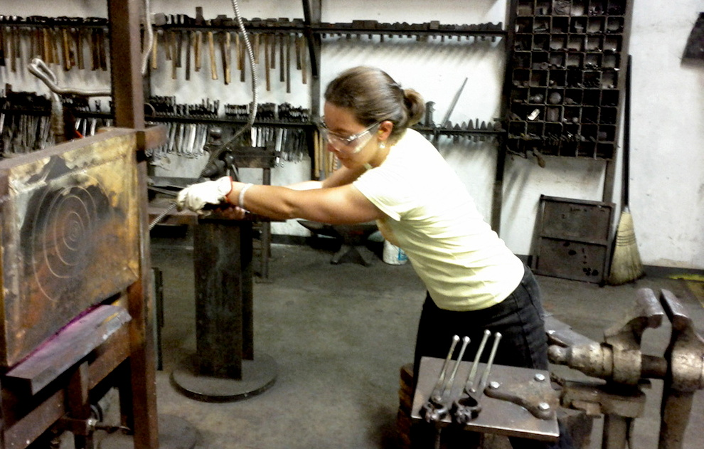
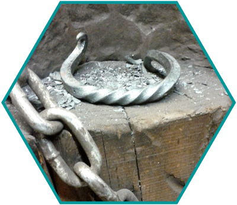

Blacksmithing

A complex project involving making four identical scrollwork pieces then fitting them together around a central post. There are two different sizes of scroll on each of the four pieces creating the top that holds the candle and the feet of the whole piece. Not only must the scrolls be identical but the whole pieces must be as well. An exercise in patience.
Fitting the finished pieces together is all precision and timing. Some metal flakes off every time a piece is heated, so that must be taken into account for the fitting. You only have a limited amount of time to work a piece while it's hot before having to reheat it, so everything needs to be planned and laid out in advance.
The idea was to create an iron dragonboat paddle, made from scrap rebar, that would serve as a wall-mounted rack. After many attempts at making a correct paddle shape, I managed to get the proportions and shoulders nearly correct.
It now lives on my sister's wall, and holds nearly all of the international medals she has won.

A quick armband created from square stock. Several basic blacksmithing techniques are demonstrated and practiced in one short project - draw and taper, scrollwork, twisting, and shaping.